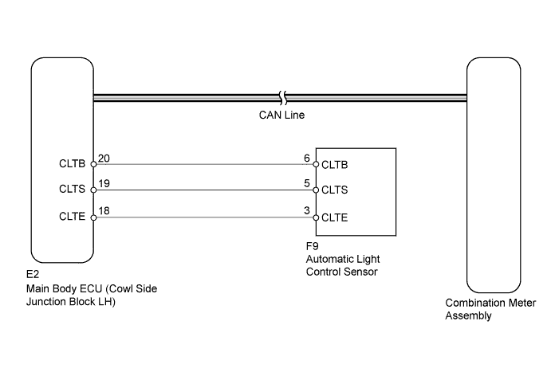

METER / GAUGE SYSTEM > Meter Illumination is Always Dark |

| 1.CHECK CAN COMMUNICATION SYSTEM |
Check for DTCs (Click here).
| Result | Proceed to |
| DTC is not output | A |
| CAN communication system (for LHD) DTC is output | B |
| CAN communication system (for RHD) DTC is output | C |
| Lighting system DTC (B1244) is output | D |
|
| ||||
|
| ||||
|
| ||||
| A | |
| 2.PERFORM ACTIVE TEST USING INTELLIGENT TESTER (DIMMER SWITCH) |
Operate the intelligent tester according to the display and select Active Test.
| Tester Display | Test Part | Control Range | Diagnostic Note |
| Dimmer Signal | Illumination dimming operation | ON or OFF | - |
|
| ||||
| OK | ||
| ||
| 3.REPLACE COMBINATION METER ASSEMBLY |
Temporarily replace the combination meter with a new one (Click here).
| NEXT | |
| 4.CHECK COMBINATION METER ASSEMBLY |
Check that the operation of the combination meter returns to normal (Click here).
|
| ||||
| OK | ||
| ||